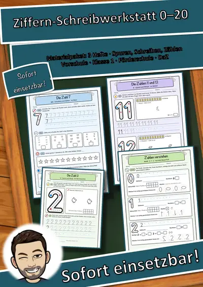
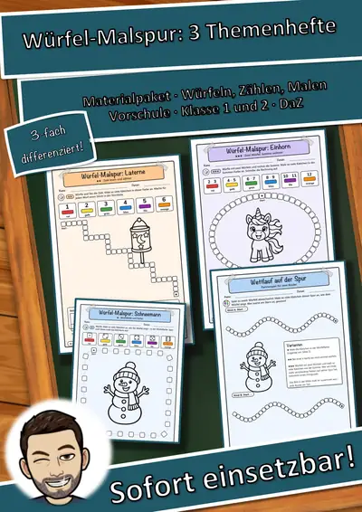
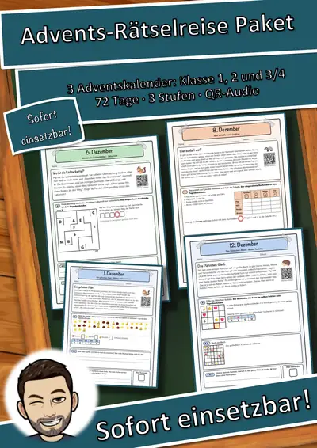
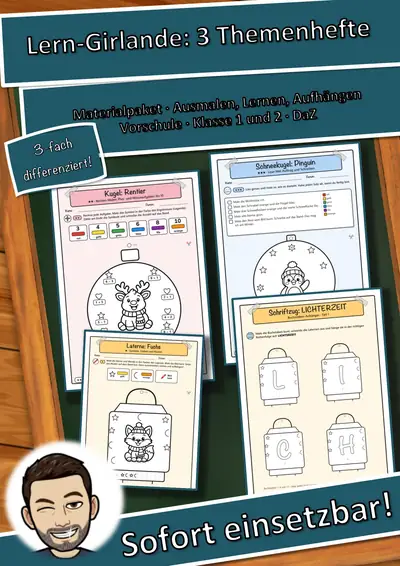
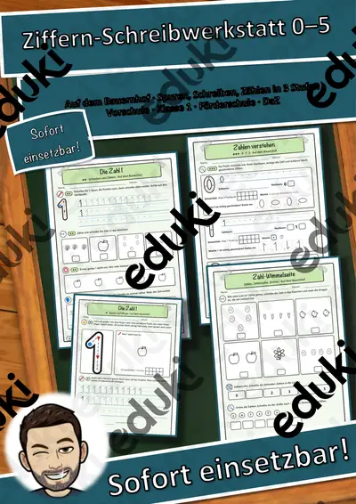

Würfel-Malspur Fantasie und Abenteuer – Würfeln, Zählen, Malen in 3 Stufen (Vorschule, Klasse 1–2)
Würfeln, zählen, malen – und am Ende ist das Bild bunt: Die Würfel-Malspur „Fantasie und Abenteuer“ ist ein Mal- und Zählspiel für die Vorschule, Klasse 1 und 2, den DaZ-Anfangsunterricht und die Förderung. Du brauchst nur Würfel und Buntstifte.
So geht es: Das Kind würfelt, sucht das Würfelbild (oder die Zahl) in der Legende und malt so viele Kästchen der Spur in dieser Farbe an. Ist die Spur bis zum Stern voll, wird das Motiv in der Mitte bunt ausgemalt. Ganz nebenbei üben die Kinder, Würfelbilder simultan zu erfassen, bis 6 bzw. 12 zu zählen, Farbwörter zu lesen und sauber auszumalen.
Dreifach differenziert – alle Kinder spielen am gleichen Thema:
- ★ 1 Würfel: Würfelbild erkennen, Farbe zuordnen, Kästchen abzählen
- ★★ 1 Würfel: Zahl lesen, Strichliste führen, häufigste Zahl bestimmen
- ★★★ 2 Würfel: Summe bis 12 rechnen, Summen-Farbe finden, Rechnung ins Protokoll schreiben
Die 4 Motive: Drache, Einhorn, Roboter, Rakete. Jedes Motiv gibt es in allen drei Stufen – mit jeweils anderer Spurform (Rahmen, Welle, Bogen, Treppe, Oval, Zickzack, Schlange).
Inhalt (17 Seiten + Deckblatt):
- Übersicht mit Spielregel in drei Schritten, Stufen-Erklärung, Farbwörtern und Kurz-Tipp für Lehrkräfte
- 12 Spielseiten (4 Motive × 3 Stufen), jede mit Legende, Spur und Motiv
- Wettlauf auf der Spur – Partnerspiel für zwei Kinder mit Varianten für jede Stufe
- Blanko-Spur für ein eigenes Bild und eine eigene Farbregel
- Würfel-Check (Würfelbilder, Farbwörter, Summen) mit Selbsteinschätzung
- Lösungen, Hinweise und Einsatz-Ideen
- QR-Code: Spielregel, Farbwörter und Zahlen 1–12 zum Anhören – ideal für Kinder, die noch nicht lesen, und für DaZEinsatz: Freiarbeit, Wochenplan, Mathe-Anfangsunterricht (Simultanerfassung, Zählen, Addition bis 12, Daten in der Strichliste), Vertretungsstunde, Förderunterricht, Vorschule, Jahreszeiten- und Festtagszeit. Laminiert mit Folienstift beliebig oft spielbar.
Teil der Reihe „Würfel-Malspur“ (3 Themenhefte: Winter und Weihnachten, Herbst und Laternenzeit, Fantasie und Abenteuer) – im Paket günstiger.
Motive KI-erzeugt und bearbeitet, keine Fotos, keine realen Personen. Audio per Sprachsynthese. Texte mit KI-Unterstützung erstellt und geprüft.
Viel Freude beim Würfeln, Zählen und Malen wünscht Snice! :)
Ähnliche Materialien

Ziffern-Schreibwerkstatt Materialpaket: Zahlen 0 bis 20 schreiben, zählen, verstehen – 3 Hefte in 3 Stufen (Vorschule, Klasse 1, DaZ)

Würfel-Malspur Materialpaket: 3 Themenhefte – Würfeln, Zählen, Malen in 3 Stufen (Vorschule, Klasse 1–2, DaZ)

Advents-Rätselreise Materialpaket Klasse 1–4: 3 Adventskalender mit Geschichten + Rätseln in 3 Stufen, QR-Audio
Ziffern-Schreibwerkstatt Zahlen 11 bis 20 im Weltall – Spuren, Schreiben, Zählen in 3 Stufen (Vorschule, Klasse 1, DaZ)
Ziffern-Schreibwerkstatt Ziffern 6 bis 10 im Meer – Spuren, Schreiben, Zählen in 3 Stufen (Vorschule, Klasse 1, DaZ)

Lern-Girlande Materialpaket: 3 Themenhefte – Ausmal-Anhänger mit Lernauftrag in 3 Stufen (Vorschule, Klasse 1–2, DaZ)

Würfel-Malspur Herbst und Laternenzeit – Würfeln, Zählen, Malen in 3 Stufen (Vorschule, Klasse 1–2)
